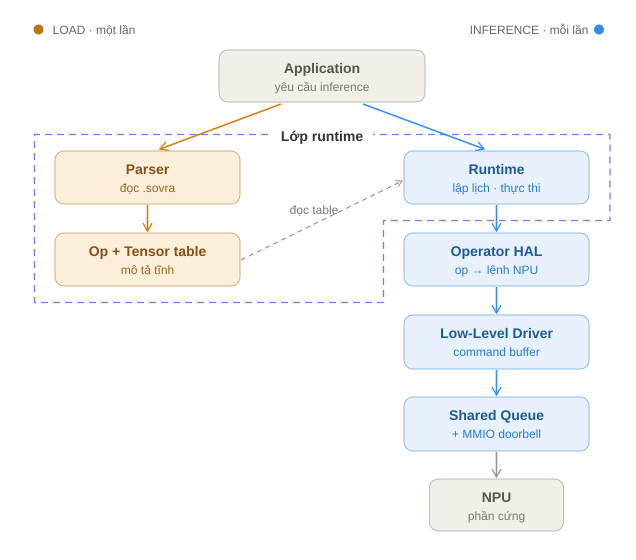
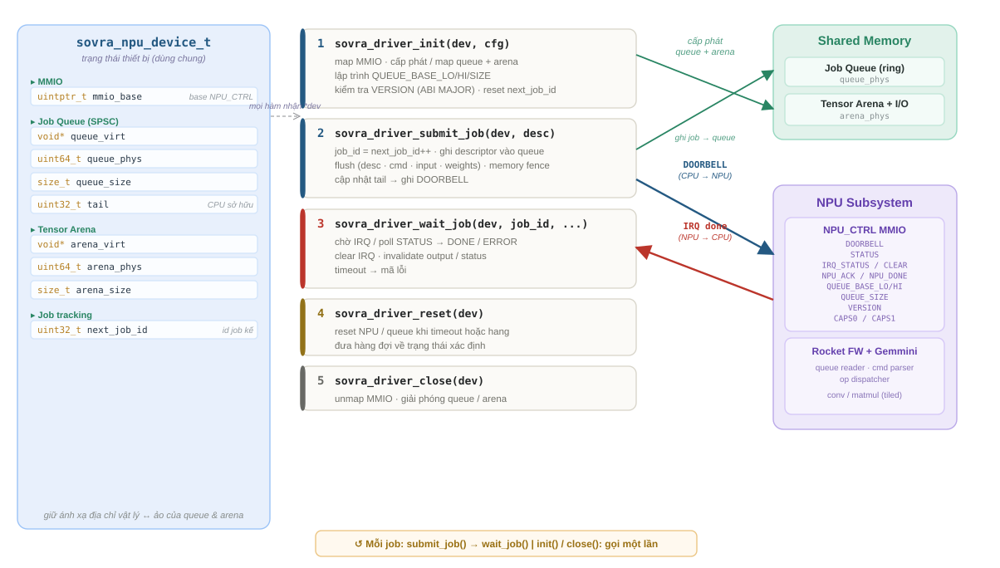
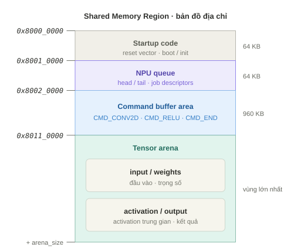
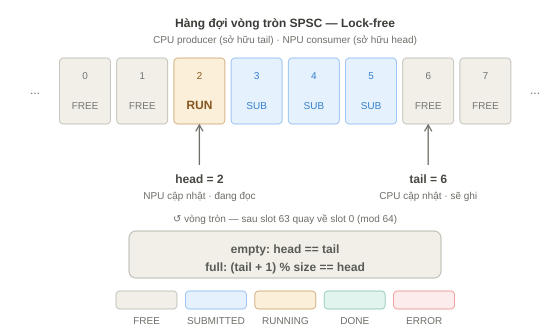
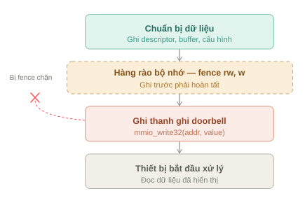
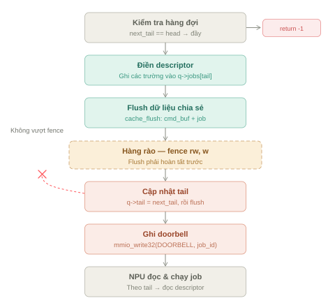
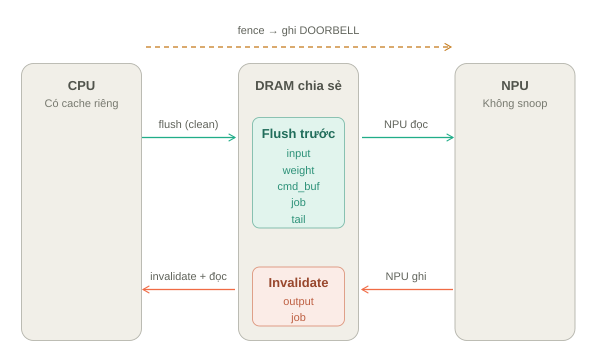
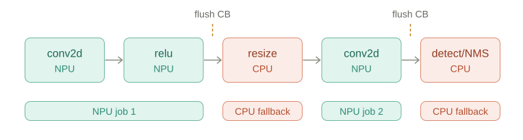

4.5.7 CPU Software Stack Design
Phần này đặc tả ngăn xếp phần mềm phía CPU, từ tầng ứng dụng xuống tới driver chạm thanh ghi phần cứng.

4.5.7.1 Application Layer
Tầng ứng dụng điều phối luồng dữ liệu ở mức cao và không tiếp xúc với chi tiết phần cứng:
- Kích hoạt camera capture.
- Nộp job ISP preprocess (raw frame → NPU input tensor).
- Gọi model runtime (qua đó rung doorbell của NPU).
- Nộp job ISP postprocess (
npu_output+ khung hình camera → khung hiển thị; ISP thực hiện NMS + render). - Logic hiển thị / mạng / OTA.
Tầng ứng dụng KHÔNG: duyệt anchor candidate, chạy vòng lặp NMS/IoU, hay rasterize box/glyph/pixel. Toàn bộ phần này thuộc ISP postprocess. Mỗi khung hình, CPU chỉ ghi một vài thanh ghi và đọc một IRQ.
Tầng ứng dụng không cần biết: chi tiết tiling của Gemmini, ReRoCC, offset thanh ghi MMIO (NPU hay ISP), bố cục nhị phân của command buffer, thanh ghi từng stage của ISP, hay Bayer pattern/bảng gain riêng của sensor.
4.5.7.2 Runtime Layer
Model Runtime là tầng điều phối chính của quá trình inference ở phía CPU. Runtime không đọc trực tiếp từng byte của file .sovra; thay vào đó, nó sử dụng kết quả đã được Model Descriptor Parser phân tích và kiểm tra để dựng execution plan.
Nhiệm vụ của Runtime được phân theo các giai đoạn sau:
Parse model (Model Descriptor Parser)
- Đọc và xác thực file, bao gồm kiểm tra magic number và version.
- Deserialize tensor table, op table, command stream và weight metadata.
- Dựng các thông tin cần thiết như Tensor table, Op table…
Tiếp nhận model
Tiếp nhận model object đã parse, gồm tensor table, op table, command stream và weight metadata.
Cấp phát bộ nhớ
- Cấp phát activation arena cho input, output và intermediate tensor — một vùng nhớ được tái sử dụng theo vòng đời tensor nhằm giảm peak memory.
- Cấp phát, hoặc yêu cầu driver cấp, DMA buffer cho command, weight và activation.
- Copy weight section vào weight DMA buffer để NPU truy cập được.
Quản lý input/output
Quản lý input tensor và output tensor mà application trao đổi với Runtime.
Phân tích graph và phân bổ thiết bị
- Phân tích graph/operator ở mức execution.
- Quyết định operator nào chạy trên NPU, căn cứ vào capability mà hardware (qua HAL) khai báo.
- Fallback các operator chưa được NPU hỗ trợ về CPU, bảo toàn data dependency tại ranh giới CPU và NPU.
- Fuse các operator tương thích khi có thể, để giảm memory traffic và số lượng command.
Chuẩn bị và submit job
- Dựng hoặc cập nhật command buffer thông qua NPU Operator HAL.
- Tạo job descriptor cho mỗi lần inference.
- Gọi NPU Low-Level Driver để submit job xuống NPU.
4.5.7.3 NPU HAL API
HAL công khai cung cấp giao diện ổn định, độc lập với model. Cấu trúc năng lực (caps) cho phép runtime truy vấn tập tính năng mà NPU/firmware hỗ trợ.
Các hàm chính của HAL:
| Hàm | Chức năng |
|---|---|
sovra_npu_init |
Khởi tạo thiết bị NPU |
sovra_npu_query_caps |
Truy vấn năng lực phần cứng/firmware |
sovra_npu_load_model |
Nạp model blob |
sovra_npu_create_context |
Tạo ngữ cảnh thực thi từ model |
sovra_npu_set_input |
Gắn buffer dữ liệu vào |
sovra_npu_run |
Chạy suy luận |
sovra_npu_get_output |
Lấy buffer kết quả |
sovra_npu_destroy_context, sovra_npu_unload_model |
Giải phóng tài nguyên |
4.5.7.4 NPU Low-Level Driver
Low-Level Driver (LLD) là tầng phần mềm thấp nhất trong ngăn xếp phía CPU và là thành phần duy nhất được phép truy cập trực tiếp phần cứng NPU. Các tầng phía trên — Application, Model Runtime, NPU HAL — không ghi MMIO trực tiếp mà ủy thác toàn bộ thao tác phần cứng cho LLD.
Nguyên tắc này khoanh vùng mọi mã phụ thuộc phần cứng (offset thanh ghi, cơ chế doorbell, quản lý cache, ánh xạ địa chỉ) vào một tầng duy nhất; nhờ đó việc chuyển hệ sang SoC hoặc bo mạch khác chỉ tác động đến LLD, và ranh giới kiểm thử của tầng này được xác định rõ ràng.
Sơ đồ dưới mô tả ba thành phần của LLD: đối tượng driver (cột trái), tập API (cột giữa), và các đích bộ nhớ/phần cứng mà driver điều khiển (cột phải).

Đối tượng trung tâm của LLD là sovra_npu_device_t. Cấu trúc này lưu trạng thái của thiết bị NPU, bao gồm địa chỉ MMIO base, thông tin Job Queue, Tensor Arena và bộ đếm next_job_id. Các vùng nhớ chia sẻ được lưu đồng thời dưới dạng địa chỉ ảo cho CPU truy cập và địa chỉ vật lý cho NPU truy cập. Nhờ đó, driver đóng vai trò cầu nối giữa không gian địa chỉ của phần mềm CPU và không gian địa chỉ mà phần cứng NPU sử dụng.
LLD cung cấp năm API chính tương ứng với vòng đời thiết bị:
| API | Chức năng |
|---|---|
sovra_npu_driver_init() |
khởi tạo MMIO, queue và arena, đồng thời cấu hình các thanh ghi cần thiết cho NPU. |
sovra_npu_driver_submit_job() |
ghi job descriptor vào Job Queue, đồng bộ cache và phát doorbell để báo cho NPU có job mới. |
sovra_npu_driver_wait_job() |
chờ IRQ hoặc polling trạng thái, xử lý kết quả và invalidate cache vùng output trước khi CPU đọc dữ liệu. |
sovra_npu_driver_reset() |
đưa NPU và queue về trạng thái xác định khi xảy ra timeout hoặc lỗi. |
sovra_npu_driver_close() |
giải phóng các tài nguyên đã cấp phát hoặc ánh xạ. |
4.5.7.5 Shared Memory
Vùng nhớ chia sẻ được phân khu cố định. Ví dụ gốc tại 0x8000_0000:
Shared DDR/SRAM base = 0x8000_0000
Thiết kế sử dụng fixed memory partition vì CPU cluster và NPU là hai master độc lập trên hệ thống. Hai bên cùng truy cập shared memory, nhưng không dùng chung một dynamic allocator. Do đó, một address map tĩnh giúp cả CPU và NPU thống nhất trước vị trí của từng vùng nhớ như queue, command buffer, weight buffer và activation arena.
NPU có thể biết chính xác từng region nằm ở đâu mà không cần CPU truyền con trỏ runtime cho mỗi lần inference. Điều này làm cho phần firmware/hardware phía NPU đơn giản hơn, giảm chi phí handshake và giảm rủi ro sai lệch địa chỉ khi trao đổi dữ liệu.
Tuy nhiên, fixed partition cũng có đánh đổi. Kích thước từng region được chốt cứng theo thiết kế ban đầu, nên hệ thống kém linh hoạt hơn so với dynamic allocation. Nếu model mới có command buffer lớn hơn, weight lớn hơn hoặc activation arena vượt quá kích thước đã cấp, memory layout cần được điều chỉnh lại.
4.5.7.6 Job Queue
Hàng đợi vòng tròn (ring buffer) một-producer/một-consumer: CPU là producer (sở hữu tail), NPU là consumer (sở hữu head).

Quy tắc trạng thái hàng đợi:
empty: head == tail
full: (tail + 1) % size == headVì mỗi phía chỉ ghi con trỏ của riêng mình nên không cần khoá (lock) hay phép toán atomic.
Để hệ CPU/NPU không cache-coherent hoạt động đúng, nên đặt head, tail và mỗi job descriptor trên các cache line riêng biệt. Nếu head và tail nằm chung một cache line, thao tác flush con trỏ của một phía có thể ghi đè bản sao cũ con trỏ của phía kia và làm hàng đợi mất đồng bộ.
4.5.7.7 MMIO Registers
Khối điều khiển NPU_CTRL là một slave AXI4-Lite. Team software cần những thanh ghi được liệt kê trong bảng dưới đây để giao tiếp với NPU (Phần này sẽ được cung cấp bởi team chịu trách nhiệm thiết kế NPU):
| Offset | Thanh ghi | Ý nghĩa |
|---|---|---|
0x00 |
QUEUE_BASE_LO |
Địa chỉ gốc hàng đợi (32 bit thấp) |
0x04 |
QUEUE_BASE_HI |
Địa chỉ gốc hàng đợi (32 bit cao) |
0x08 |
QUEUE_SIZE |
Kích thước hàng đợi |
0x0C |
DOORBELL |
CPU ghi để đánh thức NPU |
0x10 |
STATUS |
Trạng thái tổng hợp |
0x14 |
IRQ_STATUS |
Bit báo thức cho CPU |
0x18 |
IRQ_CLEAR |
CPU ghi để xoá ngắt |
0x1C |
NPU_ACK |
NPU ghi để xác nhận đã nhận doorbell |
0x20 |
NPU_DONE |
NPU ghi để báo hoàn thành |
0x24 |
VERSION |
Phiên bản RTL/firmware |
0x28 / 0x2C |
CAPS0 / CAPS1 |
Bit năng lực phần cứng |
Truy cập thanh ghi phải dùng con trỏ volatile, hàng rào bộ nhớ (fence) phải đặt ngay trước thao tác ghi doorbell.

4.5.7.8 Submit Flow

4.5.7.9 Cache Synchronization Rules
Khi CPU và NPU không cache-coherent, phải tuân thủ trình tự flush/invalidate sau:
- Trước doorbell: flush command buffer, job descriptor, tail, input tensor, và trọng số nếu vừa cập nhật; đặt fence; rồi mới ghi
DOORBELL. - Sau khi hoàn thành: invalidate job descriptor, output tensor, và vùng activation/output nếu cần.

4.5.7.10 Runtime Scheduling
Scheduler duyệt đồ thị: gom các op NPU hỗ trợ vào command buffer khi gặp op không hỗ trợ thì flush command buffer hiện tại xuống NPU, chạy op đó trên CPU, rồi tiếp tục.
for each graph node:
if op NPU hỗ trợ:
append lệnh NPU
else:
flush command buffer hiện tại xuống NPU
chạy node trên CPU (fallback)